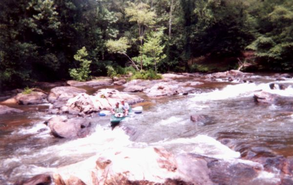

Hatchet Creek
Bob Barnett, pipe, sunglasses and all, in his element on Hatchet Creek.

Jarrod Baker and Jeff Mooney, on the largest rapid between Kings Bridge and Kelly's Crossroads, at low water.
(photo courtesy Josh Tidwell)